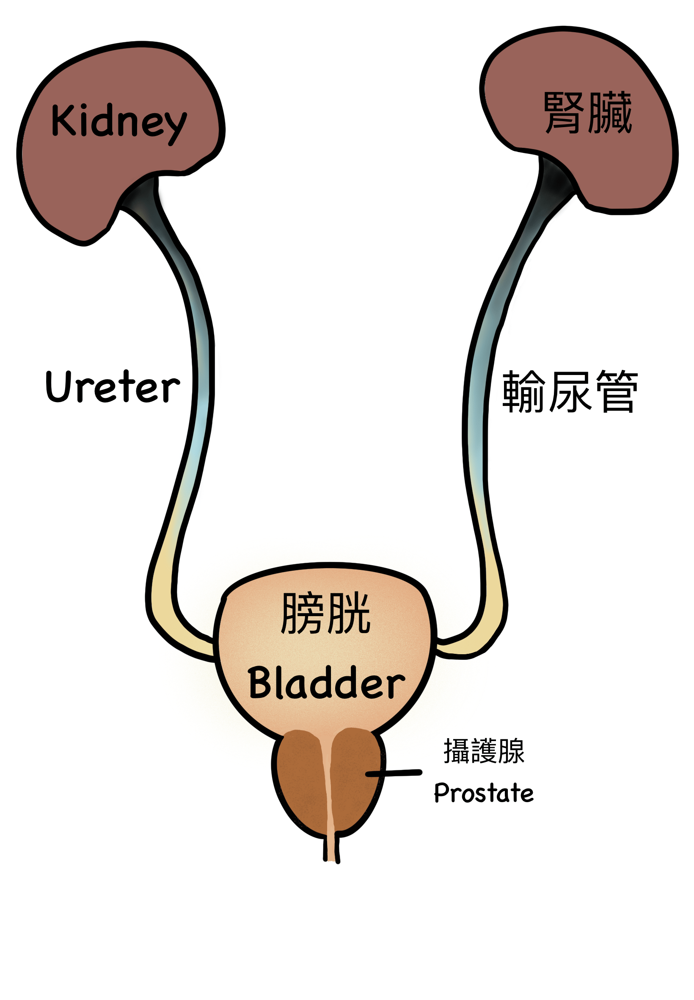

一對一門診，確保隱私
男性泌尿道相關疾病、攝護腺發炎只要適當治療，都可以獲得有效改善。泌密會客室的醫師團隊擁有泌尿道學科上的專業知識與豐富臨床經驗，更重要地，是絕對注重每位病患的隱私。
坦然求醫才能及早發現問題，即時治療，讓生活恢復幸福常軌。診間以一對一方式進行，對病患症狀悉心照護，讓病患安心主訴病情。
男性的泌尿道不比女生容易感染，因此較容易被男性忽略，然而，若平時衛生習慣不佳、生活作息和飲食失調，泌尿道也可能遭受細菌感染，而蔓延到整個泌尿道，造成排尿疼痛、攝護腺發炎等症狀，不可不慎。這裡統整幾個常見的男性泌尿道疾病：攝護腺發炎、睪丸炎、副睪丸炎、膀胱炎與尿道炎，分別簡介這些症狀的成因與治療方式。
01 / SYMPTOMS
-你是否有這些困擾？-
- 頻尿、夜尿、小便無力，不敢長途旅遊、怕找不到廁所
- 排尿疼痛、排尿困難，每次尿尿都是一種折磨
- 睪丸、私密處反覆感到疼痛、影響親密關係
02 / UNDERSTANDING
男性的泌尿系統

1.泌尿道：
分上泌尿道和下泌尿道，上泌尿道範圍包含腎臟，下泌尿道為膀胱。
2.攝護腺（前列腺）：
位於膀胱下方，隨著年紀增長，受男性賀爾蒙或慢性發炎等因素影響，可能導致攝護腺增生、肥大，引起排尿困難等症狀。
03 / CONDITIONS
四類疾病，分章認識
攝護腺發炎
-什麼是攝護腺炎？-
攝護腺炎是攝護腺發炎的疾病。攝護腺炎通常分三種主要類型：急性攝護腺炎、慢性細菌性攝護腺炎和非細菌性攝護腺炎（也稱為慢性骨盆疼痛綜合症，CPPS）。
1. 急性攝護腺炎：
攝護腺因細菌感染造成急性發炎，也可能是其他尿路感染讓細菌順延感染至攝護腺引起。
2. 細菌性攝護腺炎：
由細菌感染引起，感染可能由尿道或血流傳播至攝護腺。細菌性攝護腺炎通常可以透過抗生素治療。
3.非細菌性攝護腺炎（慢性骨盆疼痛綜合症）：
不由細菌引起，病因可能涉及免疫系統異常、神經問題或其他因素。症狀可能包括骨盆疼痛、排尿困難、射精疼痛等。
攝護腺炎的症狀可能因患者的狀況而有所不同，有時症狀可能與其他泌尿系統疾病相似，因此對於任何懷疑患有攝護腺炎的人來說，最好的做法是諮詢專業泌尿科醫生，進行完整的檢查和評估。
-攝護腺炎的症狀-
發燒、頻尿、尿急、排尿疼痛、尿液滴瀝、排尿不順、感染部位劇烈疼痛，並延伸出發燒、排尿困難、頻尿、夜尿、射精疼痛等全身不適的症狀。
-攝護腺炎的原因？-
攝護腺炎通常好發於 30-50 歲左右的男性病患，也是 50 歲以上男性泌尿科患者常見的病症之一。細菌性攝護腺炎通常起因於泌尿道感染，常見的病原菌有：大腸桿菌、腸球菌、披衣菌等，透過泌尿道、進入血管和淋巴進行感染。
非細菌性攝護腺炎不是由細菌引起，可能起因於：免疫系統異常反應、神經因素、膀胱頸異常收縮、攝護腺結石，神經和骨盆肌肉異常也可能和慢性攝護腺炎有關。詳細具體原因需要經由醫師做專業檢查和診斷。
-攝護腺炎的治療方式-
藥物治療
採用抗生素、非類固醇抗炎藥物（NSAIDs）等治療。
行為治療
1.改變生活方式：
養成健康飲食習慣，避免攝取刺激性飲食和高糖、咖啡因性刺激飲料、酒精，初步緩解症狀。非細菌性攝護腺炎患者可以採用坐浴，有助於減輕骨盆壓力，提供緩解。
2. 骨盆底物理治療：
透過物理治療方法，包括運動和按摩，來強化和放鬆骨盆底肌肉，有助於緩解疼痛和改善症狀。
3. 低能量體外震波治療（LIESWT）：
低能量體外震波治療被證實能有效降低攝護腺發炎的不適症狀。該治療方式利用震波刺激骨盆底的血流，刺激器官新生。單次療程約 15-30 分鐘不等，醫師會根據患者的身體狀況，調整療程。一個完整的療程至少需要 6 次，後續再做觀察追蹤。這個治療方式優點是是非侵入式，適合不想吃藥、不適合吃藥的病患。
睪丸炎/副睪丸炎
-睪丸與副睪丸是同一器官嗎？-
睪丸和副睪丸同樣位於陰囊內，是兩個不同的部位。
睪丸：
位於陰囊內，左右各一，有兩個主要功能：一、分泌睪固酮，也就是男性賀爾蒙，二、製造精子。
副睪丸：
副睪丸是附著在睪丸上面的細小管道。製造出的精子會暫時儲藏於此，副睪丸會分泌液體來稀釋精子，成為精液的一部分。
-什麼是睪丸/副睪丸炎？-
睪丸炎是睪丸發炎，通常會合併副睪丸同時發炎。睪丸炎通常分急性和慢性兩類，急性睪丸炎往往由泌尿道細菌感染引起，透過泌尿道感染至睪丸。
急性睪丸/副睪丸炎：
一種是經由性行為接觸感染細菌，先得了尿道炎再延伸感染到睪丸引發發炎，常見感染細菌可能包含大腸桿菌、淋病等，因此睪丸炎也可能被判定為性病。另一種則是自身的尿路感染或攝護腺發炎延伸至睪丸。
慢性睪丸/副睪丸炎：
慢性睪丸炎則可能是長期的泌尿道反覆感染、泌尿系統異常或其他因素有關。症狀會比較輕微，但長期仍會導致身體不適，並容易合併急性再次感染，長期忽略不顧可能衍生不孕、陰囊積水等併發症。
-睪丸/副睪丸炎症狀-
蛋白尿、睪丸紅腫灼熱感、睪丸劇烈脹痛、陰囊腫脹，並可能延生出發燒、發冷、全身無力等症狀。
-睪丸/副睪丸炎的原因-
正常情況下，睪丸與血液之間有一道屏障，細菌不容易進入副睪及睪丸。而當生活習慣不好、免疫力下降、或是不安全性行為，導致泌尿道發生反覆感染時，細菌便會經由尿道進入輸精管到副睪和睪丸，造成感染發炎。睪丸/副睪丸發炎不可不慎重，部份患者感染後，因睪丸變小、變軟，無法製造精子而引起不孕。
-睪丸/副睪丸炎的治療方式-
藥物治療
大多使用抗生素可以改善，並建議病患採取多休息。如果副睪丸/睪丸部位持續腫脹疼痛難耐，可以冰敷患部（記得不要冰太久，中間需要間隔休息）。
手術治療
針對嚴重患者，經臨床判斷是出自結石或泌尿道結構問題而導致反覆發炎的情形，醫生會建議採取相關手術，治療結石與結構異常的症狀，藉此緩和、改善發炎情況。
膀胱炎
-什麼是膀胱炎？-
膀胱炎是一種常見的泌尿系統問題，在女性中較為常見，然而男性也有感染風險。通常是經由細菌感染引起膀胱內膜發炎。這些細菌可以從尿道進入膀胱，引起發炎和相應的症狀。
膀胱炎分急性、慢性兩種。
急性膀胱炎：
細菌入侵導致膀胱內膜快速發炎，或經營尿路感染從其他部位延伸至膀胱造成急性發炎。急性通常來得又快又兇，男性容易好發於中老年，因膀胱頸異常或攝護腺腫大導致疾病發生。
慢性膀胱炎：
與患者自身免疫力系統有關，長期作息不正可能導致抵抗力不足，讓細菌長期反覆感染發作膀胱炎。
-膀胱炎的症狀-
頻尿、尿急、下腹部不適、排尿疼痛或灼熱感、嚴重時可能出現血尿情形，尿液會呈現肉眼可見的粉紅色或紅色。
-膀胱炎的原因-
膀胱炎通常和細菌感染有關，其中以大腸桿菌最為常見。長期嚴重便秘有可能增加膀胱炎機率，這是因為糞便留在體內無法順利排出，導致細菌繁殖量大增而增加感染機率。或是尿道括約肌太緊無法放鬆，排尿時容易殘存尿液至膀胱，導致細菌感染。如果患者同時患有糖尿病，發炎情形可能更嚴重。
-膀胱炎的治療方式-
藥物治療
最好的治療方式是大量喝水加入細菌排出體外，醫生會開立抗生素緩解發炎症狀。一次服藥完整週期為 3 天，是發炎情形判斷是否持續服藥。
手術治療
若患者長期反覆性感染，或病患本身結合結石、排尿障礙、尿液逆流、腫瘤等其他病症，經保守治療成效不彰後，醫師可能會採取相關的手術治療。
尿道炎
-什麼是尿道炎？-
是的，男性也有尿道發炎的可能性，這是受許多男性忽略的部分。尿道炎是一種常見於下泌尿道感染發炎的疾病。很高機率是透過不安全性行為而細菌感染，感染病原主要為淋菌，非透過性行為或其他細菌感染，則歸類為「非淋病尿道炎」。
淋病尿道炎：
透過性行為接觸，感染琳菌導致尿道發炎，好發於年輕男性，淋病尿道炎較難控制的原因來自於淋病抗藥性較嚴重，需要花費時間耐心治療，避免反覆發炎感染。
非淋病尿道炎：
多數尿道炎感染細菌來自大腸桿菌、綠膿桿菌、披衣菌感染、生殖道黴漿菌等引發尿道發炎。另外要小心，是否為攝護腺發炎引起的尿道感染。如有以下症狀務必尋求專業泌尿科醫師的診斷。免疫力較低的糖尿病患者也容易感染。
-尿道炎的症狀-
- 排尿灼熱疼痛感
- 陰莖發癢、灼熱感
- 精液或尿液有血絲
- 陰莖有分泌物、膿狀異物
-尿道炎的原因-
衛生習慣不佳、不安全性行為，或是生活習慣不佳免疫力下降等，導致細菌入侵體內導致尿道發炎機率。因此糖尿病患者尤需注意，避免合併成更嚴重的併發症。值得一提的是，若病患本身有結石、攝護腺肥大、神經性膀胱炎等症狀，尿道發炎機率也會增高。
-尿道炎的治療方式-
藥物治療
使用抗生素 3～7 天，多能有效改善病人症狀，醫師開的藥必須完整服用不能輕易斷藥，以免病菌產生抗藥性，治療難度便會增加。並鼓勵患者大量喝水排出細菌。
尿道炎通常也與糖尿病和尿道結石的症狀互相合併，如有這類型狀況，尋求專業醫師的診斷，以預防感染可能性。
04 / CARE
-主要治療項目-
完整檢測疾病，找出病灶根源
男性泌尿道症狀多與攝護腺有關，當然，男性也會有泌尿道感染的機率存在。求診泌尿科，能針對泌尿道系統提供更深入仔細的檢查項目和診斷。包含：X 光檢查尿結石、超音波檢查腎臟發炎或積水、尿液檢查與膀胱鏡檢查等。透過完整的泌尿道診斷，找出病灶根源，由兩位專業醫師的專業經驗，做出確切的評估，採取適當治療。
提供專業診療，持續追蹤
無論是中年男性好發的頻尿、夜尿、排尿困難或疼痛問題，或是攝護腺發炎、攝護腺肥大等症狀，泌密會客室提供專業診斷，持續追蹤病情，協助患者恢復健康或控制症狀。
05 / OUR DOCTORS
難以啟齒的私泌心事，交給泌密會客室

陳偉傑 醫師
『創造非凡精彩人生』
健康，其實是一個動詞，需要通過努力與踏實砌成的動詞，很多人會說奮鬥不一定會成功，但我們要說：「不奮鬥，絕對失敗」只有奮鬥過的人生，才能不留遺憾、才能更加精彩也才能至善至美。
羅詩修 醫師
『捍衛男性泌密健康』
泌密健康，就四個字，但它並不會讓你一輩子都過得那麼容易，轉機就在於你堅強的那一刻，你的人生，會因為你的泌密健康，過得更性福美滿，也過得更加精彩
【本資訊無法取代醫師親自關心您；若有副作用等使用問題，請洽醫師諮詢。】
06 / VISIT US
-醫師服務地點-
津久診所
台北市中山區松江路276號3樓
-如何抵達-
捷運
橘線(中和新蘆線)行天宮站的4號出口，出站後右轉步行40秒就可以看到津久診所的大招牌，搭電梯上3樓。
開車
1.台灣聯通停車場-將捷二場(停車塔，眾多信用卡可停車折抵): 台北市中山區松江路336號
2.聯邦佳佳大樓停車場(地下平面停車場): 台北市中山區松江路235巷22號
坐公車
1.捷運行天宮站(松江路) 109,1550A,203,214, 214直,222,26,277,279,280,280直,41,49,5,5203A,612,676,9069,9069A,945, 松江新生幹線,林口-台北長庚醫院,紅57
2. 松江新村 214, 214直,286副,49,9069,9069A,945
3. 民權松江路口 1841,1841A,1842,1842A,225,225區,5250,5250A,617,617副,63,685,688,801,803,內科通勤專車18,敦化幹線，民權幹線,紅29,紅31